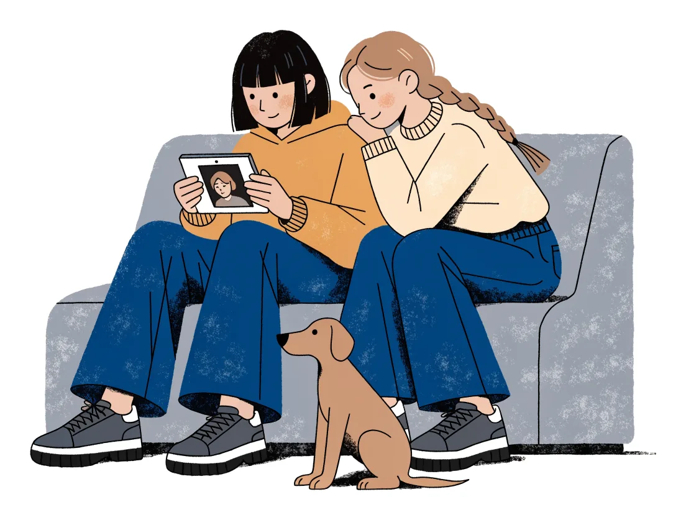
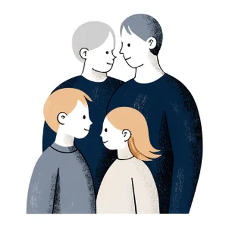
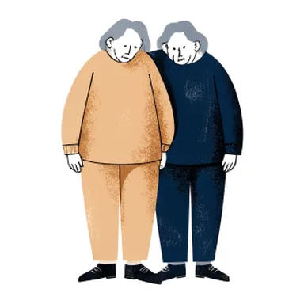
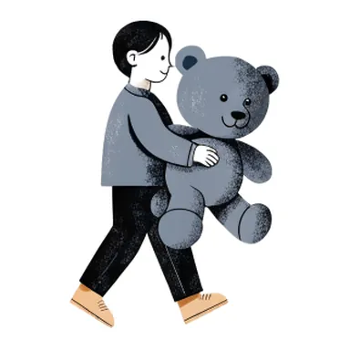
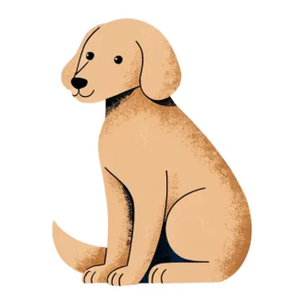
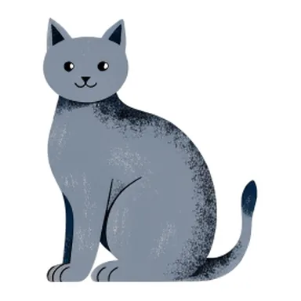
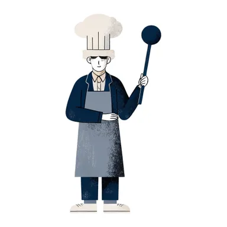

먼저 생각해 보세요.
mein Vater, meine Mutter. 왜 Mutter 앞에는 meine가 왔을까요?
ein, eine와 같아요. die 명사 앞에서는 -e가 붙어요.

저녁이에요. Yuna가 Emma에게 한국에 있는 가족의 사진을 보여 줘요.
눌러서 들어 보세요.
먼저 생각해 보세요.
mein Vater, meine Mutter. 왜 Mutter 앞에는 meine가 왔을까요?
ein, eine와 같아요. die 명사 앞에서는 -e가 붙어요.
Lektion 5의 낱말 다섯 개를 다시 떠올려 보세요.
문법 mein, dein, sein, ihr, haben + Akkusativ (einen Bruder, eine Schwester)
이 과를 마치면 내 가족을 독일어로 소개할 수 있어요.
저녁, 거실이에요. Yuna가 가족사진을 보여 줘요.
들으면서 찾아보세요. Yuna의 남동생은 몇 살인가요?
이번에는 Emma가 벽에 걸린 가족사진을 보여 줘요.
들으면서 찾아보세요. Emma의 조부모님은 어디에 사시나요?
두 대화를 듣고 답하세요.
Yunas Vater ist Lehrer.
아버지는 엔지니어(Ingenieur)예요. 선생님은 어머니예요.
Yuna hat einen Bruder.
Emma hat eine Schwester.
Emma는 형제자매가 없어요. 대신 개 Milo가 있어요.
Yuna의 남동생 Jun은 몇 살인가요?
Emma의 조부모님은 어디에 사시나요?
Emma의 할아버지는 연세가 어떻게 되시나요?
낱말 20개예요. 낱말이나 예문 앞의 단추를 누르면 소리가 나요. 명사는 der, die, das를 색으로 구분했어요.

die Familie, die Familien 가족
Das ist meine Familie.우리 가족이에요.
die Eltern (Pl.) 부모님
Meine Eltern wohnen in Seoul.우리 부모님은 서울에 사세요.
der Vater, die Väter 아버지
Mein Vater ist Ingenieur.우리 아버지는 엔지니어예요.
die Mutter, die Mütter 어머니
Meine Mutter ist Lehrerin.우리 어머니는 선생님이에요.
die Geschwister (Pl.) 형제자매
Hast du Geschwister?형제자매가 있어?
der Bruder, die Brüder 형, 오빠, 남동생
Ich habe einen Bruder.나는 남자 형제가 한 명 있어요.
die Schwester, die Schwestern 누나, 언니, 여동생
Ich habe keine Schwester.나는 여자 형제가 없어요.

die Großeltern (Pl.) 조부모님
Meine Großeltern wohnen in Bonn.우리 조부모님은 본에 사세요.
der Opa, die Opas 할아버지
Mein Opa ist fünfundsiebzig.우리 할아버지는 일흔다섯이세요.
die Oma, die Omas 할머니
Meine Oma ist zweiundsiebzig.우리 할머니는 일흔둘이세요.
der Onkel, die Onkel 삼촌, 이모부, 고모부
Mein Onkel heißt Ben.우리 삼촌 이름은 Ben이에요.
die Tante, die Tanten 이모, 고모, 숙모
Das ist Tante Julia.이분은 Julia 이모예요.

das Kind, die Kinder 아이, 자녀
Ihre Kinder heißen Mia und Leo.그녀의 아이들 이름은 Mia와 Leo예요.

der Hund, die Hunde 개
Wir haben einen Hund.우리는 개가 한 마리 있어요.

die Katze, die Katzen 고양이
Hast du eine Katze?고양이가 있어?
süß 귀여운, 달콤한
Der Hund ist so süß.그 개는 정말 귀여워요.
der Beruf, die Berufe 직업
Was ist dein Vater von Beruf?너희 아버지는 직업이 뭐야?
der Ingenieur, die Ingenieure 엔지니어
Er ist Ingenieur.그는 엔지니어예요.
die Ärztin, die Ärztinnen 의사 (여자)
Sabine ist Ärztin.Sabine는 의사예요.

der Koch, die Köche 요리사
Thomas ist Koch.Thomas는 요리사예요.
이 과의 낱말로 여덟 문제를 풀어요.
21부터는 일의 자리를 먼저 말하고 und로 이어요. 21은 einundzwanzig, 말 그대로 '하나 그리고 스물'이에요. 줄을 누르면 소리가 나요.
예문을 보고 답해 보세요.
die Familie 앞에는 mein과 meine 가운데 무엇을 썼나요?
규칙
mein(나의)과 dein(너의)은 ein처럼 변해요. der와 das 명사 앞에서는 mein, dein이고, die 명사와 복수 앞에서는 meine, deine예요.
| der Vater | das Kind | die Mutter | die Eltern | |
|---|---|---|---|---|
| 나의 | mein Vater | mein Kind | meine Mutter | meine Eltern |
| 너의 | dein Vater | dein Kind | deine Mutter | deine Eltern |
주의 한국어로는 '우리 엄마'라고 하지만 독일어로는 meine Mutter, 곧 '나의 어머니'라고 해요.
예문을 보고 답해 보세요.
Tante Julia의 남편을 말할 때 쓴 말은 무엇인가요?
규칙
남자의 것은 sein, 여자의 것은 ihr로 말해요. 뒤에 오는 명사가 die 명사이거나 복수이면 -e를 붙여요.
| 누구의 | der, das 명사 앞 | die 명사, 복수 앞 |
|---|---|---|
| 그의 (er) | sein Bruder | seine Schwester |
| 그녀의 (sie) | ihr Bruder | ihre Schwester |
주의 먼저 주인이 남자인지 여자인지 보고 sein과 ihr를 골라요. 그다음에 뒤에 오는 명사를 보고 -e를 붙일지 정해요. Emma의 아버지는 ihr Vater, Lukas의 어머니는 seine Mutter예요.
예문을 보고 답해 보세요.
der Bruder가 haben 뒤에 오면 ein은 어떻게 바뀌나요?
규칙
haben 뒤에 오는 명사는 4격(Akkusativ)이에요. 한국어의 '~을, ~를'에 해당해요. der 명사만 모양이 바뀌어서 ein은 einen, kein은 keinen이 돼요. die와 das 명사는 그대로예요.
| der Bruder | das Kind | die Schwester | |
|---|---|---|---|
| Das ist … | ein Bruder | ein Kind | eine Schwester |
| Ich habe … | einen Bruder | ein Kind | eine Schwester |
| Ich habe … (없음) | keinen Bruder | kein Kind | keine Schwester |
주의 지금은 이것만 기억해요. '~이 있다'고 말할 때 der 명사 앞의 ein과 kein에 -en이 붙어요.
Lukas의 가족 이야기를 듣고 답하세요.
Lukas und seine Familie
Lukas Das ist meine Familie.
Lukas Mein Vater heißt Martin. Er ist Lehrer.
Lukas Meine Mutter heißt Anna. Sie ist achtunddreißig.
Lukas Ich habe eine Schwester. Sie heißt Lea und ist acht.
Lukas Wir haben keinen Hund, aber wir haben zwei Katzen.
Lukas의 아버지는 직업이 무엇인가요?
Lukas의 어머니는 몇 살인가요?
Lukas에게는 누가 있나요?
Lukas의 집에는 어떤 동물이 있나요?
숫자를 듣고 고르세요.
어떤 숫자인가요?
dreiundvierzig
어떤 숫자인가요?
siebenundsechzig
어떤 숫자인가요?
neunundachtzig
어떤 숫자인가요?
einundzwanzig
Elif가 쓴 글을 읽고 답하세요.
Meine Familie
Das ist meine Familie. Mein Vater ist Koch. Meine Mutter ist Ingenieurin.
Ich habe zwei Brüder. Sie heißen Can und Emre. Can ist neunzehn und Emre ist elf.
Meine Oma wohnt auch bei uns. Sie ist siebzig.
Elifs Mutter ist Ingenieurin.
Elif hat zwei Schwestern.
Elif에게는 남자 형제가 두 명(zwei Brüder) 있어요.
Wie alt ist Emre?
Wer wohnt auch bei Elif?
mein, meine, dein, deine 가운데 알맞은 말을 고르세요.
Das ist Vater.
Das ist Mutter.
Ist das Bruder?
Wo wohnen Großeltern?
Schwester heißt Lea.
Wie heißt Hund?
sein과 ihr 가운데 알맞은 말을 고르세요.
Das ist Lukas. Schwester heißt Lea.
Das ist Emma. Hund heißt Milo.
Das ist Yuna. Bruder ist zehn.
Das ist Thomas. Beruf ist Koch.
Das ist Tante Julia. Kinder heißen Mia und Leo.
haben 뒤에 알맞은 말을 고르세요.
Ich habe Bruder.
Ich habe Schwester.
Wir haben Hund.
Lukas hat Hund.
Hast du Katze?
Emma hat Geschwister.
숫자를 독일어로 쓰세요.
34 =
52 =
76 =
100 =
낱말을 순서대로 눌러 문장을 만드세요.
나는 남자 형제가 한 명 있어.
우리 아버지는 엔지니어야.
형제자매가 있어?
우리 조부모님은 본에 사셔.
듣고 그대로 써 보세요.
Das ist meine Familie. 우리 가족이야.
Hast du Geschwister? 형제자매가 있어?
Ich habe einen Bruder. 나는 남자 형제가 한 명 있어.
Das ist mein Vater. / Das ist meine Mutter. 이분은 우리 아버지예요. / 이분은 우리 어머니예요.
Er heißt … / Sie heißt … 이름은 …예요.
Er ist … Jahre alt. / Sie ist … Jahre alt. …살이에요.
Hast du Geschwister? 형제자매가 있어?
Ich habe einen Bruder. / Ich habe eine Schwester. 남자 형제가 한 명 있어. / 여자 형제가 한 명 있어.
Ich habe keine Geschwister. 형제자매가 없어.
Was ist dein Vater von Beruf? 너희 아버지는 직업이 뭐야?
Er ist Lehrer. / Sie ist Ärztin. 선생님이야. / 의사야.
대화 A에서 역할을 하나 고르세요. 상대의 말은 음성으로 나오고, 내 차례에는 직접 말해요.
가족 한 사람과 그 사람의 이름, 그리고 형제자매나 반려동물을 적으세요. 완성된 문장을 소리 내어 읽어 보세요.
Das ist meine Familie.
Meine Mutter heißt Mira.
Ich habe einen Bruder.
Meine Familie
내 가족을 소개하는 글을 써 보세요. 다섯 문장쯤이면 충분해요.
Das ist meine Familie. Mein Vater heißt Sungho. Er ist fünfundvierzig Jahre alt und Ingenieur. Meine Mutter heißt Mira. Sie ist Lehrerin. Ich habe einen Bruder. Er heißt Jun und ist zehn. Wir haben keinen Hund.
다 쓴 뒤에 확인해 보세요.
Ich kann meine Familie vorstellen.내 가족을 소개할 수 있어요.
Ich kann über Alter und Beruf sprechen.가족의 나이와 직업을 말할 수 있어요.
Ich kann die Zahlen bis 100 sagen.100까지 숫자를 말할 수 있어요.